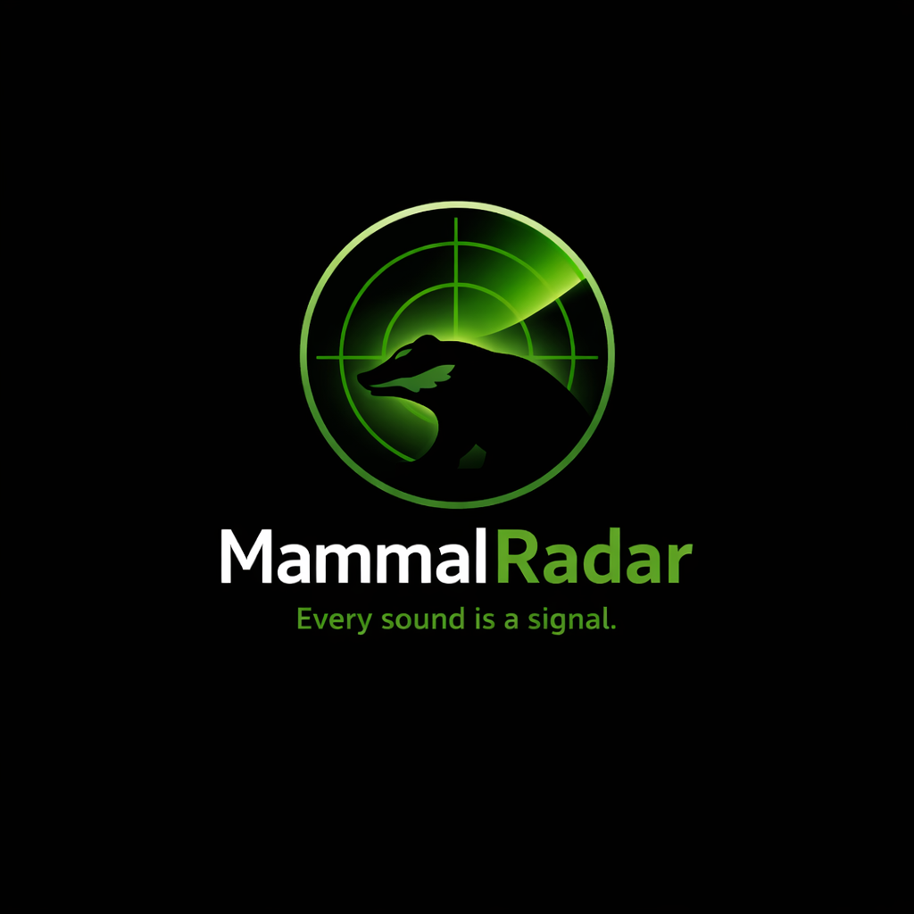

🎙️ Luistert
24/7 audio monitoring.

Every sound is a signal.
MammalRadar brengt AI-gebaseerde zoogdierdetectie via geluid naar iedereen die natuur wil monitoren. Het project is open source en gebouwd om van veldopstelling tot dashboard schaalbaar te blijven. Zo wordt elke opname een bruikbaar signaal voor onderzoek en bescherming.
24/7 audio monitoring.
AI herkent zoogdieren aan hun geluid.
Detecties naar Home Assistant & MQTT.